- 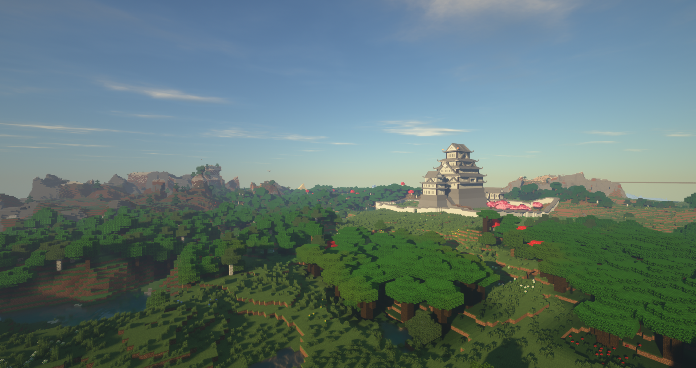
-

-

-

-

- 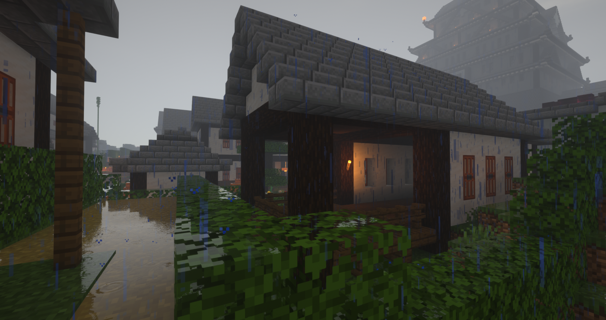
-

- 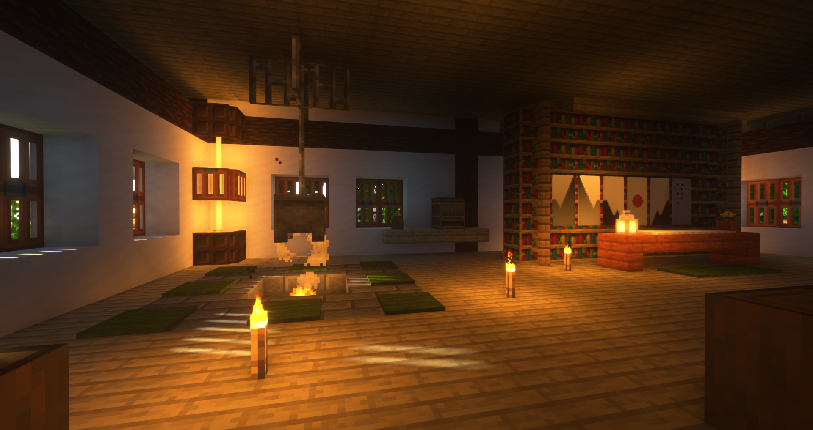
-

姬路城
參考了日本姬路城的設計
傳聞過去遷移至此地的勇者們，在興建完姬路城後
一名自稱山神的長髮女妖，擅自住進了天守閣
而作為提供住處的交換，女妖一年會向城主現身一次
並告知這座城未來的命運
後來這隻妖怪便被人們稱為「刑部姬」
負責人：村長
風沙小港
當初第一批來到姬路城的勇者們，就是在此處登陸
原本只是座倚著沙洲而建的小港
但因為開港通商後
絡繹不絕的外國商隊陸續拜訪此地
甚至還在港口旁興建了洋行
作為外地人和本地人的中介與調解中心
負責人：神秘人
-

- 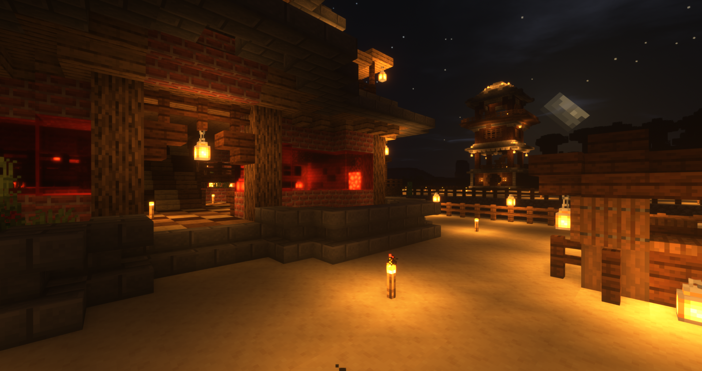
- 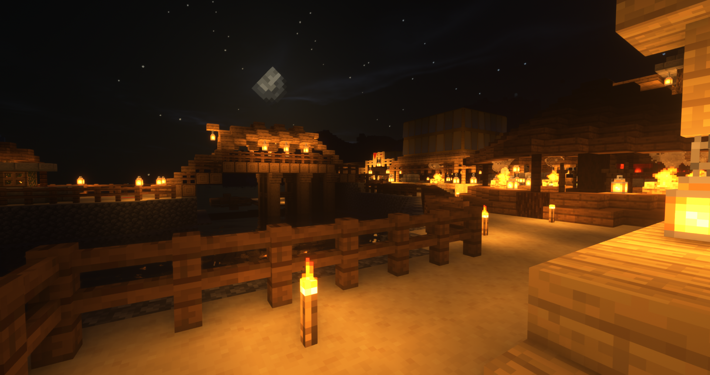
-

- 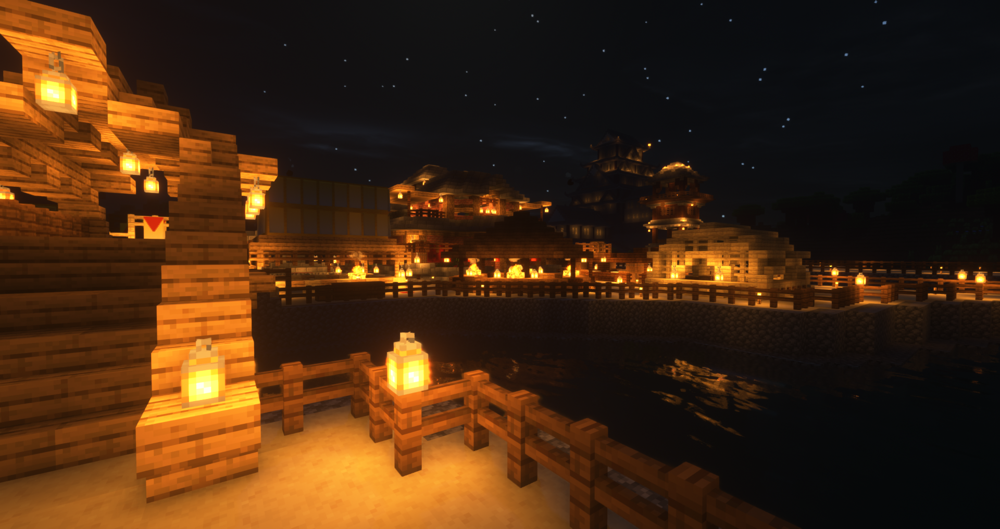
-

-

- 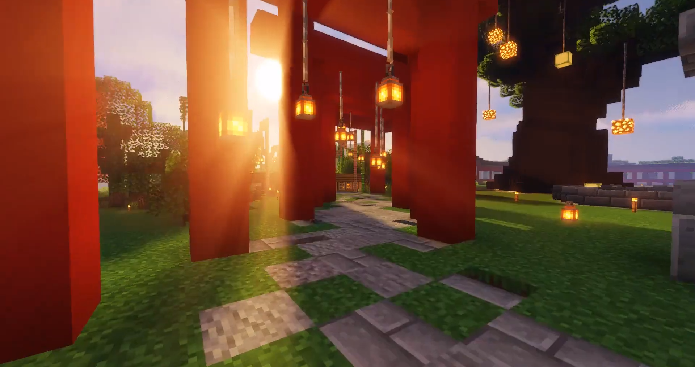
-

- 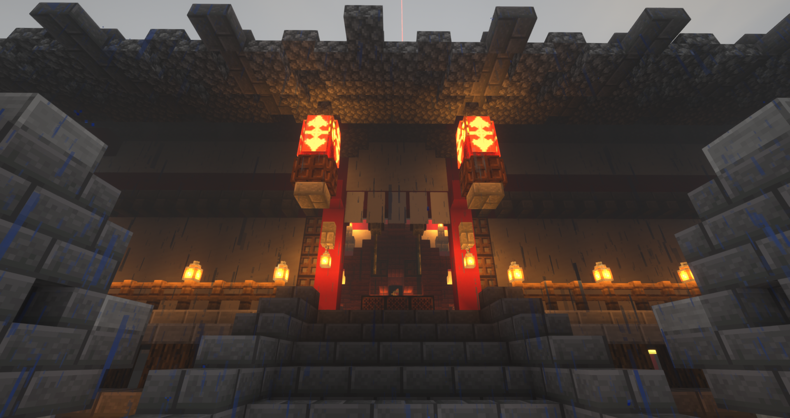
神社路
作為供奉神明的場所，神社前總是擠滿參拜的人群
久而久之，各大小攤販看到了商機
漸漸聚集到通往神社的道路旁
如今神社路已是一條充滿攤販
並且每年都會固定舉辦各樣祭典的熱鬧市街
負責人：蒼鳴
四合鳥居陣
在神社的後院，有片寬廣的空地
傳聞這裡便是掌管此區神明的住所
由於這位神明非常好客
因此交代村民在他的住所四面都築起鳥居
以防前來拜訪的人找不到通往神明居所的入口
負責人：蒼鳴
-

- 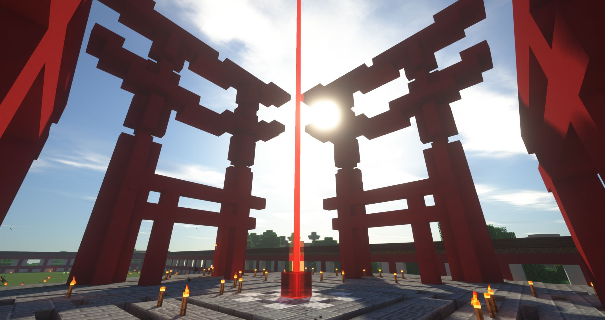
- 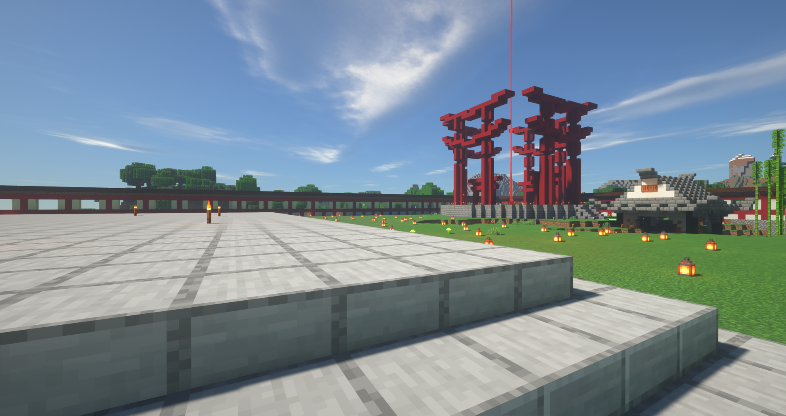
-

- 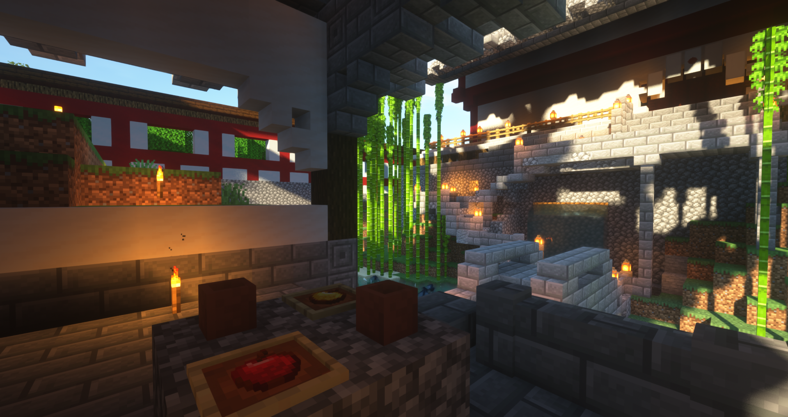